Responsive Gilt.com
Overview
History of Mobile Web at Gilt
What does "Responsive" mean?
Adaptive tool set
Responsive tool set
Pictures
Development Process
Quirks & hiccups
Testing
Evangelize
History of Mobile Web at Gilt
What does "Responsive" mean?
We're talking about both Adaptive Design and "Responsive Design"
Responsive Design
Width of the viewport
Adaptive Design
Device capabilities (power, features) and network conditions
Examples!
Carousel
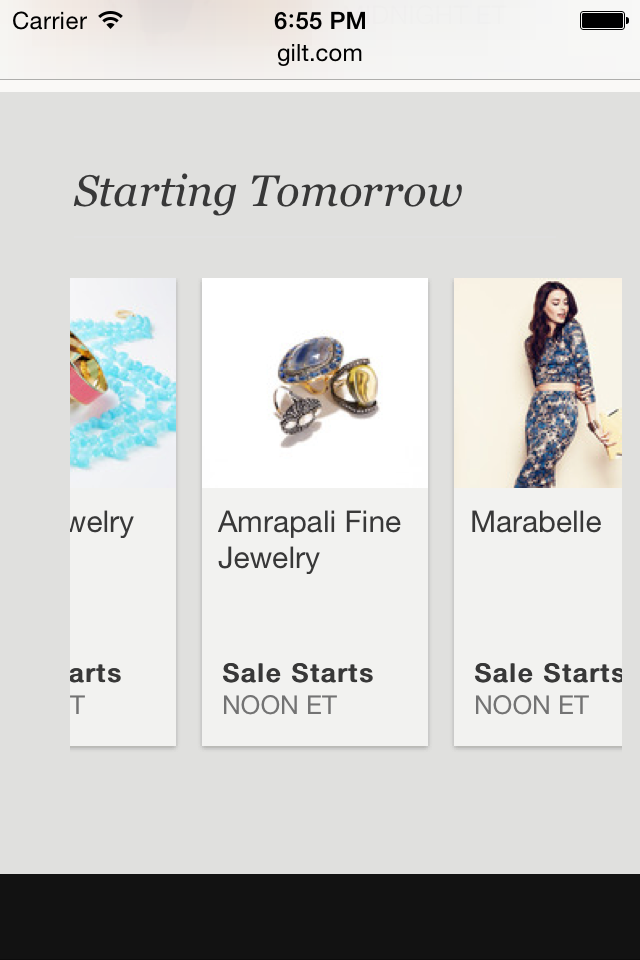Search Filtering
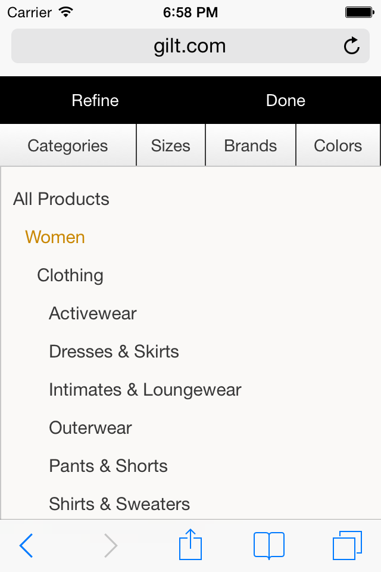 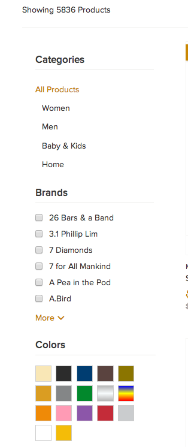Adaptive tool set
Not All Devices Are Equal
commons-web reads user agent
triages to one of three buckets called "target experiences"
Device Target Experiences
Minimal
Intermediate
Full
Minimal Target Experience
isIPod || isIPhone || isBlackberry || isIE6 || isIE7 || isAndroidShell || isAndroid
Intermediate Target Experience
isIPad
Full Target Experience
!isMinimalTargetExperience && !isIntermediateTargetExperience
Target Experience Functions
Handlebars
JavaScript
Scala
Handlebars:
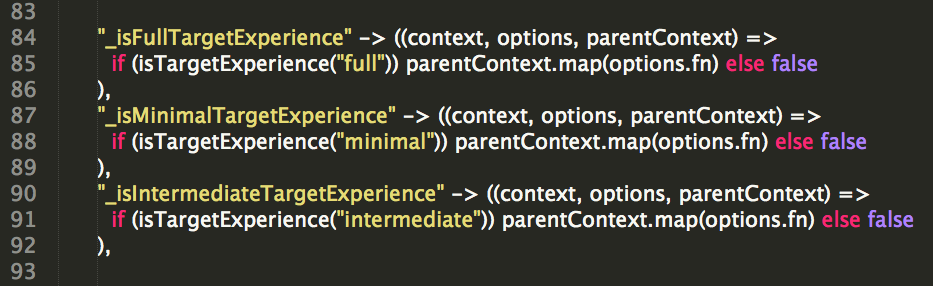JavaScript:
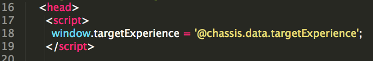 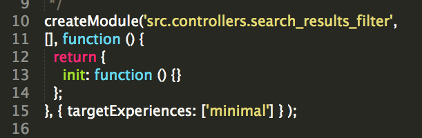Scala:
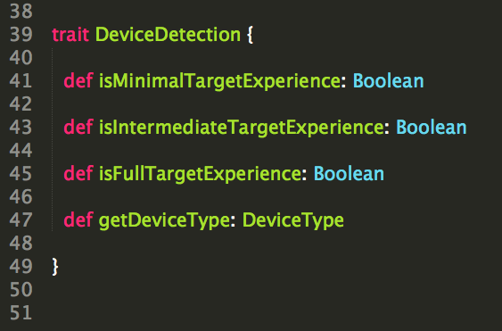Responsive design tool set
4 Viewport Breakpoints
wide..........desktop
medium...iPad
narrow.....mobile landscape
tiny............mobile portrait
LESS Variables
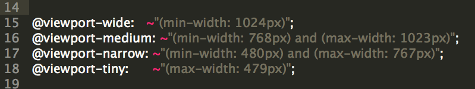Inline Selector Overrides
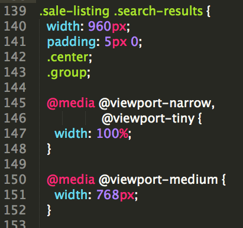Modernizr: CSS Touch/No-Touch Classes
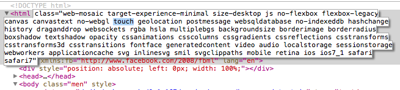Browser Detect Features:
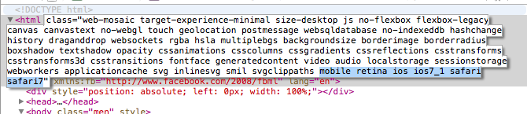Pictures
Development Process
Quirks & hiccups
Testing
Selenium Testing Helper
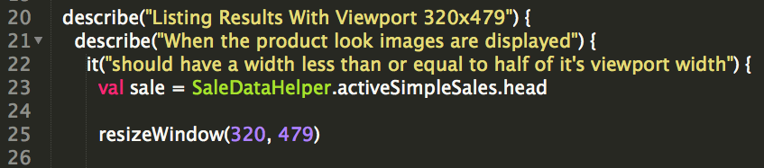QA on your device
Testing Caveats
Chrome Emulator is OK
iOS is better
Device is best and required before merging to master
Evangelize